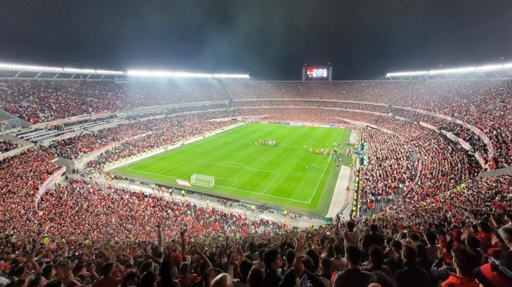

Mercado de pases
Manuel Lanzini regresará al país en las próximas horas y ultimará detalles antes de sumarse al plantel profesional. Ya tiene fecha confirmada para realizarse la revisión médica.
Copa Libertadores
Pasó la ida con Inter de Porto Alegre y River se prepara para disputar la revancha por los octavos de final de la Copa Libertadores. Luego del partido en el Monumental, el Millonario definirá su suerte la próxima semana en el Estadio Beira Río y con la presencia de su público en las tribunas. El encuentro se jugará el martes 8 de agosto a las 21.00
Socios River Plate
Según el informe oficial aprobado durante la reunión, actualmente el Millonario cuenta con 335.945 miembros activos, una cantidad que lo coloca como la segunda institución del mundo con mayor cantidad de asociados. Esta cifra se logró gracias a la suma de 71.897 nuevos carnets entre mayo y julio, de los cuales 41.030 corresponden a la comunidad Somos River y otros 30.867 son nuevos socios. Comparativamente a nivel internacional, la institución presidida por Jorge Brito se encuentra en una excelente posición, solo superado por el Real Madrid, que cuenta con alrededor de 360 mil vínculos activos, y unos 30 mil más que el Bayern Múnich. A nivel nacional, lidera la tabla de asociados por arriba de Boca Juniors, que cuenta con 315.879 socios según el informe de AFA de comienzo de año en donde también se indica que lo siguen Independiente (95.173), Racing (83.717) y San Lorenzo (80.410).
